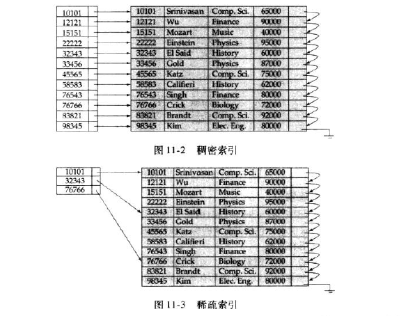
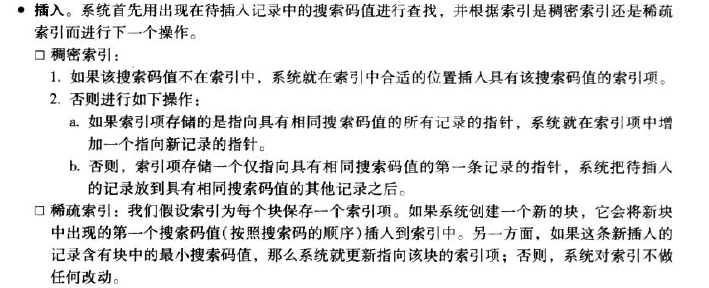
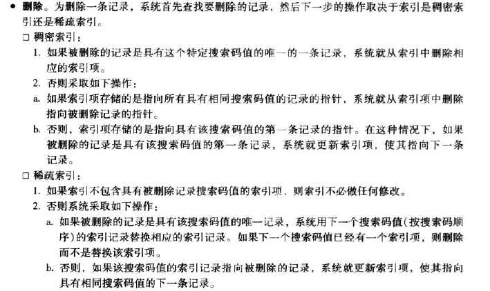

数据库系统概念11
11.索引与散列
许多查询只涉及文件中的少量记录，但是很多时候我们需要因此查询关系中的每一个元组。为了能够快速定位这些记录，所以出现了索引这种与文件相关联的附加结构。
11.1 基本概念
两种索引类型：
- 顺序索引：基于值的顺序排列。
- 散列索引：基于将值平均分布到若干散列桶中。一个值所属的散列桶由散列函数决定。
搜索码：用于在文件中查找记录的属性或属性集称为
11.2 顺序索引
聚集索引/主索引：如果文件是按照某个搜索码指定的顺序排序的，那么该搜索码对应的索引称为聚集索引/主索引。虽然通常建立在主码上，但也不是必须的喔！
非聚集索引/辅助索引：搜索码指定的顺序与文件中记录的物理顺序不同的索引称为非聚集索引或辅助索引。
索引顺序文件：在搜索码上有聚集索引的文件称为索引顺序文件。
稠密索引与稀疏索引
索引项/索引记录：由一个搜索码值和指向具有该搜索码值得一条或多条记录得指针构成。（指针包括磁盘块的标识和标识磁盘块内记录的块内偏移量）
稠密索引：文件中的每个搜索码值都有一个索引项。
稀疏索引：在稀疏索引中，只为搜索码的某些值建立索引项。

多级索引
如果索引很小，搜索一个索引项的时间就很短。但是如果索引过大不能放在主存中，就必须要从磁盘中读取索引块，多次读取磁盘块将消耗非常多的时间。
索引与更新
当文件中有记录insert或delete的时候，索引都需要更新；update的时候，搜索码属性受影响的索引也必须相应地更新。


对于多级索引，
辅助索引
11.3 B+树索引文件
逻辑上靠近的块，物理上不一定挨得很近
非子结点是稀疏索引
数据库系统概念11
https://github.com/Wuhlan3/2021/11/22/数据库系统概念11/